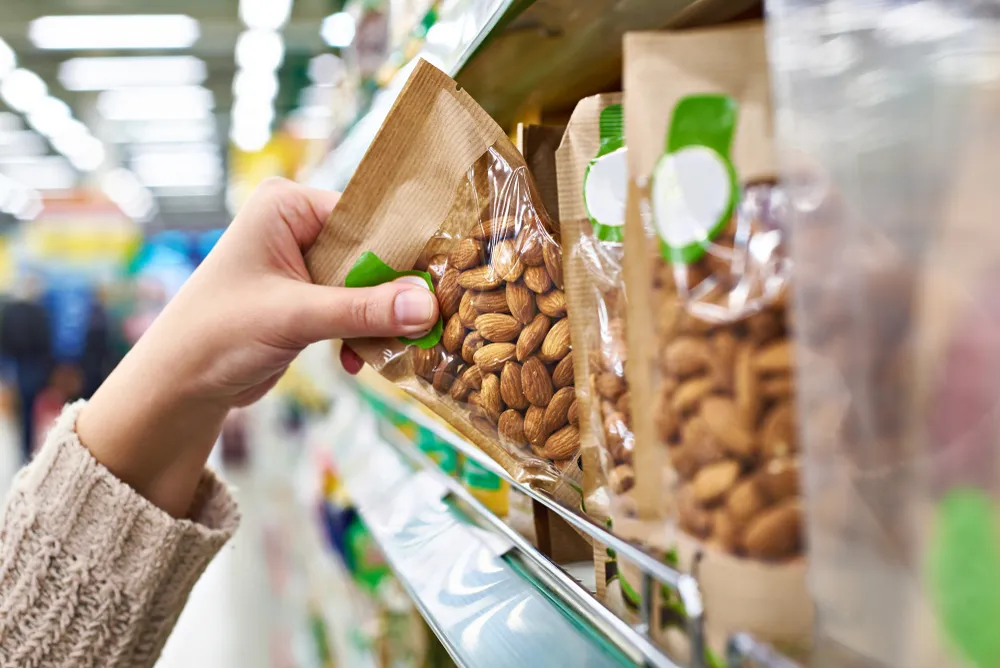

Healthy Snacks You Can Buy At The Store

Most of us strive to maintain a healthy lifestyle, particularly when it comes to diet. Unfortunately, making healthy food choices isn’t always easy. Of course, the first step is to limit pre-packaged or processed foods and eat as many natural, whole foods as possible. But what about those times when all we need is a quick little snack to tide us over till our next meal? While snacking has gotten a bad rep in the past, it can be seen as an important healthy-eating strategy . Sometimes all we need is a handful of trail mix or a little granola bar to get us by. And let’s face it, not many people have time to make a snack from scratch all day, every day. Luckily, many food producers have jumped on the healthy eating bandwagon to provide healthy store-bought options for snacks.
Saffron Road Organic Crunchy Chickpea Snacks
Any form of chickpea snack is the way to go for someone who craves something salty and crunchy . Most of these snacks come in a wide variety of flavors from sweet to spicy. What makes them more desirable than other grab and go snacks, like chips or crackers, is that they provide fiber and protein.
Not only are they delicious, they can also be used as an addition to meals (i.e. a topping for salads, soups, or breading on chicken). One of our favorite products is the Saffron Road Crunchy Chickpeas in Bombay Spice. You can find it in a full size bag or single serving packs. In every 1/4-cup there are only 130-calories, 4-grams of fat, 18-grams of carbs, 1-gram of sugar, 6-grams of protein, and 150-miligrams of sodium.
Dang Foods Coconut Chips
While chickpea snacks are good for people who like salty snacks, coconut chips offer the same satisfying crunch but for the sweet tooth! A good coconut chip is hard to find. You almost feel like goldilocks looking for just the right amount of sweetness. Some brands are too sweet while others are too bland. SELF touts the Dang Foods Lightly Salted Coconut Chips as the best brand out there. They describe them as “unique, kind of surprising, [and] very light and crispy.”
In a 1-ounce serving of Dang Foods coconut chips there are 180-calories, 15-grams of fat, 10-grams of carbs, 1-gram of sugar, 2-grams of protein, and 105-miligrams of sodium. Not bad!
KIND Bars
The best snack is one that contains lots of protein so that you’re actually left feeling satisfied and not hungry again 20-minutes later. Protein bars are a popular grab-and-go snack and the options in this department are endless! Be careful with these because while a lot of them might be marketed as “healthy,” they could be high in sodium or sugar. We suggest trying any of the KIND protein bars . They actually tastes good with just the right amount of sweetness and nuttiness.
We suggest the toasted caramel nut flavor or the dark chocolate cocoa. The following might vary slightly based on flavor, but one bar contains approximately 250-calories, 17-grams of fat, 18-grams of carbs, 8-grams of sugar, 12-grams of protein, and 75-miligrams of sodium.
Blue Diamond Almonds
Don’t have time to throw together a trail mix? Just grab a pack of almonds ! They are one of the healthiest nuts to enjoy and they’ll keep you full until your next meal. While they might seem like a boring snack, they don’t have to be! Venture outside the box and go for a flavored or coated almond.
Do you have a sweet tooth? Buy some chocolate covered almonds. If you like salty snacks, Blue Diamond has a wide variety of seasonings from lightly salted, to toasted coconut or a tangy BBQ. If you’re feeling adventurous, try the wasabi and soy sauce flavor!
Wonderful Pistachios
Another healthy nut to snack on are pistachios. While they aren’t entirely mess free since they do have a shell to crack, they are well worth the effort. If you’re eating this snack on the go, try the Wonderful Brand . They offer shell-free pistachios in a variety of flavors, from red pepper, garlic and vinegar, to something a little sweeter like honey and salt.
Be advised, it’s easy to go overboard with this snack. They are just so small and delicious! To help with this, the Wonderful Pistachios brand sells their product in little single serving packs.
GimMe Organic Seaweed Chips
This is a snack people either love or hate. It’s definitely an acquired taste, but trust us, you’d never know these chips were made from seaweed ! Most seaweed chips fall into the same trap as other healthy snacks which is that they end up tasting bland.
According to SELF magazine, the sesame flavor GimMe Organic Premium Roasted Seaweed chips have managed to escape this trap by including this amazing nutty flavor. This is on top of already being perfectly salty and crunchy. Half a package of seaweed chips consists of 25-calories, 2-grams of fat, 1-gram of carbs, 0-grams of sugar, 1-gram of protein, and 65-miligrams of sodium.
SmartSweets
I never thought I’d see the day when there was candy on a list of healthy snacks, but here we are! Anybody with a sweet tooth has likely already tried these. SmartSweets have been a huge hit ever since they hit the market. People love them because they look like candy, smell like candy, and even taste like candy!
So what’s the catch? They have 92-percent less sugar than the average bag of gummies which makes them a *healthier* option. Unlike other brands who use artificial coloring, SmartSweets use fruit and veggie juice. Some even come with a dose of fiber! There are a variety of flavors, including peach rings, gummy worms, and sour watermelons.
RIND Snacks Chewy Skin-On Dried Fruit
Not interested in candy but still want something sweet? We suggest trying RIND’s chewy skin-on dried fruit. What’s unique about these is that they keep the skin on to maximize texture, flavor, and nutrition. Hello, healthy snacking!
This Non-GMO project Verified snack comes in a wide variety of flavors from strawberries, pears, apples and even kiwi. It’s only 120-calories per serving, as well as 0-grams of total fat, 0-mg cholesterol, 0-mg of sodium, 28-grams total carbs, 4-grams of dietary fiber, 13-grams of total sugars (0-grams added sugars), and 1-gram of protein.
SeaPoint Farms Dry Roasted Edamame
Are you someone who often reaches for a bag of chips or crackers when looking for a quick snack? If so, these might be the perfect healthy snack replacement for you! Grab a bag of SeaPoint Farms Dry Roasted Edamame because unlike pretzels or chips, they are high in fiber and protein.
SeaPoint knows exactly what we’re looking for in a snack because they’ve concocted the perfect mix of flavoring and even portioned it out so that it’s sold in single serving packs, saving us time and calories. One serving of this snack contains 200-calories, 8-grams of fat, 220-miligrams of sodium, 13-grams of carbs (8-grams of fiber and 2-grams of sugar), and 20-grams of protein.
Chomps Grass-Fed Beef Stick
You might be surprised to see these on here, but hear us out. Chomps Grass-Fed Beef Stick is high in protein and actually made from pure-unprocessed ingredients which is hard to find these days. This company prides itself on using the highest quality meat that is free-roam without any hormones or additives.
It fits the bill as being the perfect snack because not only is it light and under 100-calories , but it’s rich in protein which means it will actually keep us full until our next meal. To enjoy a well rounded snack, we suggest snacking on one of these with a fiber-rich fruit like a sliced apple or pear.
Boom Chicka Pop or SkinnyPop Popcorn
You’d be hard pressed to find someone who doesn’t love movie theatre popcorn. Unfortunately it doesn’t exactly fall into the “healthy” snack category so we need to find something with a little less salt and butter, but just as much flavor.
Obviously making popcorn at home from scratch is the healthiest option, but if you’re out and about and don’t have time to pop kernels on the stove, reach for one of these popular brands: Boom Chicka Pop or SkinnyPop . Both have a selection of flavors and have earned a stamp of approval from most popcorn lovers.
Bare Apple Chips
An apple chip a day keeps the doctor away? That’s how that saying goes, right? For the sake of healthy snacking, we’ll agree. Yet another snack that satisfies the urge to snack on something crunchy, Bare Baked Crunchy Apple Chips meet all the standards of a chip, but are actually made from apples. Yum!
While it will be hard not to, we don’t suggest swapping your daily fruit intake with these. However, they are a great snack to store in your desk when you’re craving something sweet. Bare Apple Chips are made from apple slices, which are then sprinkled with cinnamon and baked until they meet the crunchy standards of perfection. They have no added sugar or preservatives and are Non-GMO project Verified.
One package contains only 60-calories, 0-grams of fat, 0-mg of sodium, 14-grams of carbs, 2-grams of fiber, 11-grams of total sugars (0-grams added sugar), and 0-grams of protein.
Source: https://activebeat.com/diet-nutrition/healthy-snacks-you-can-buy-at-the-store/